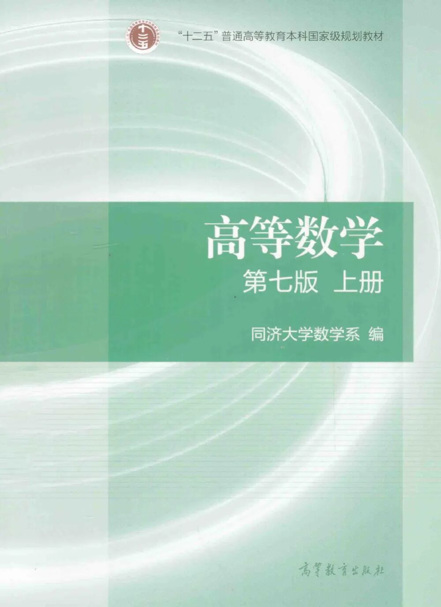
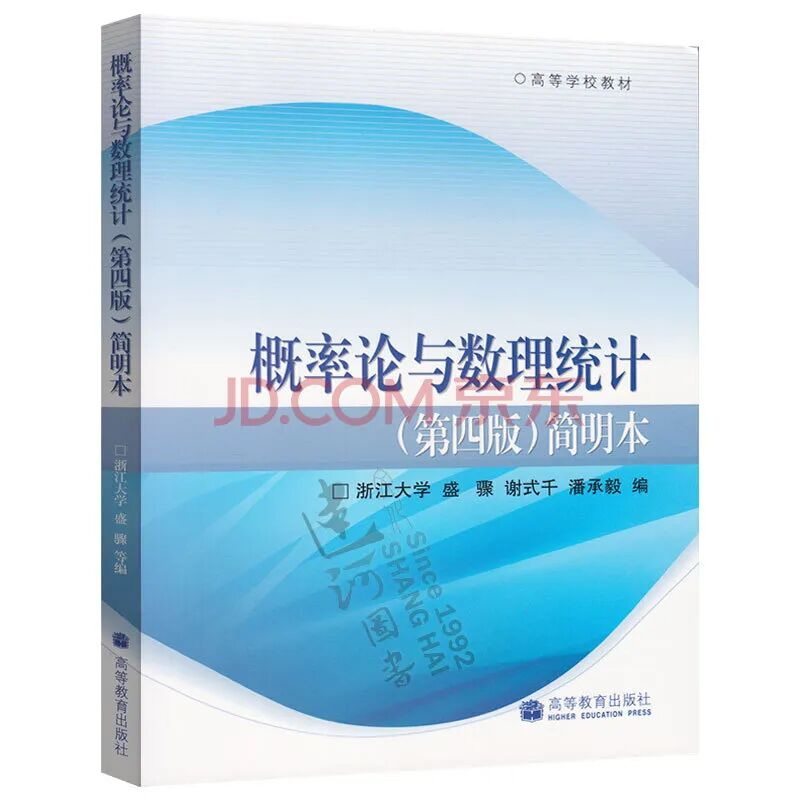
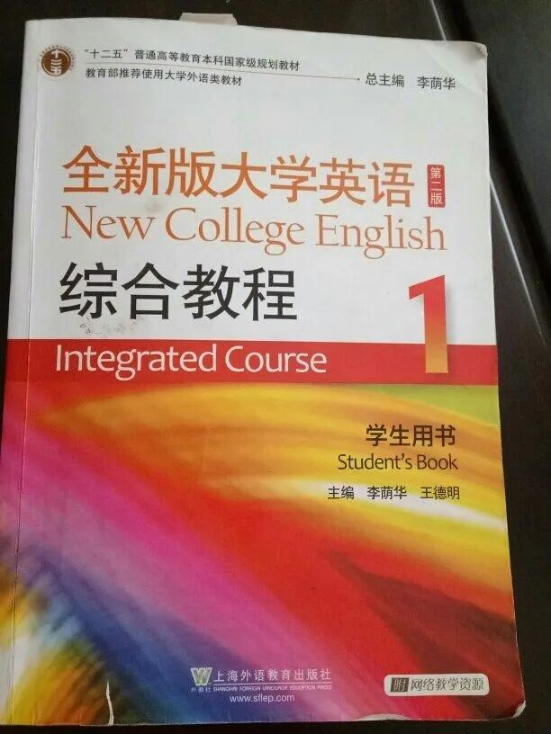
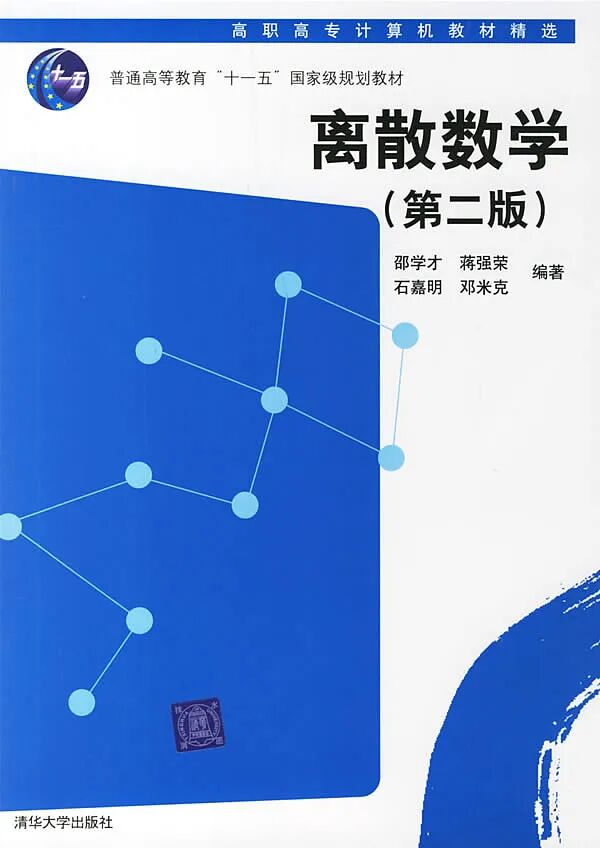
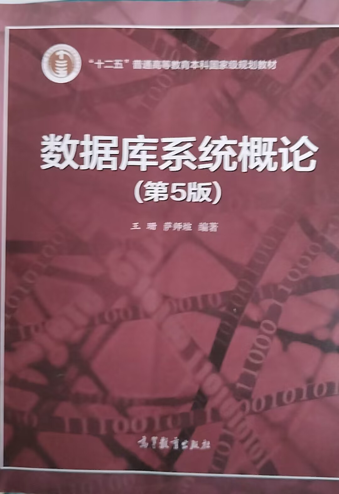
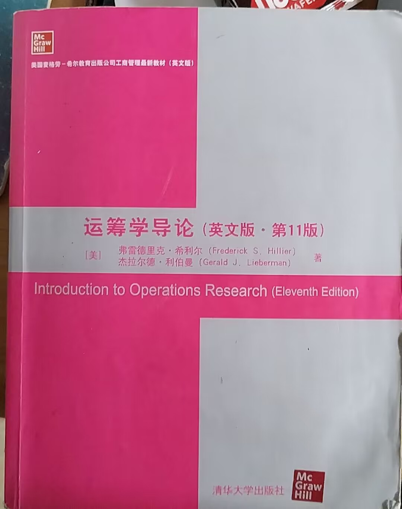
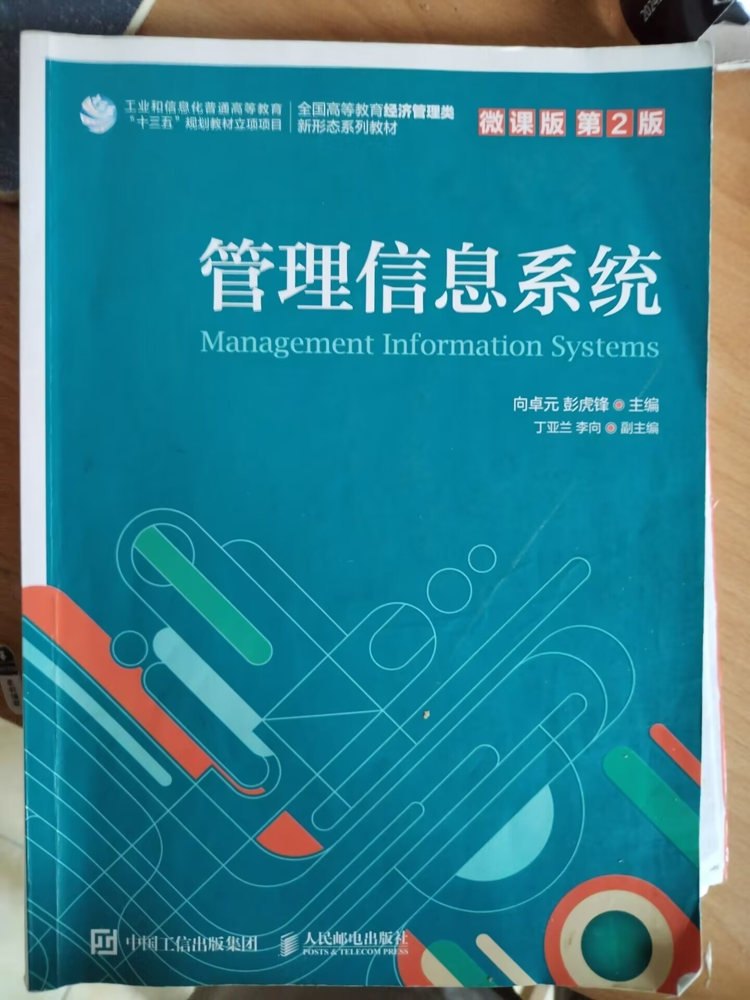
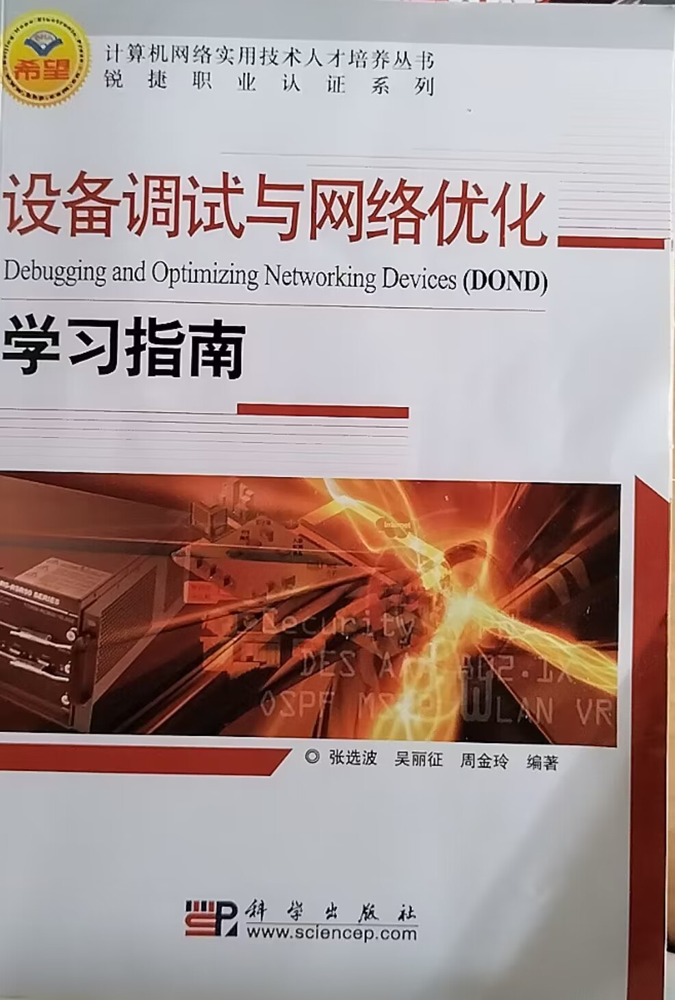
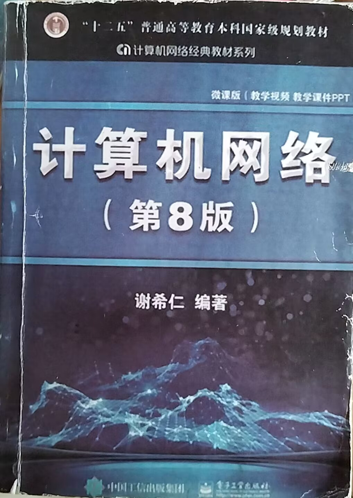

高等数学
开课时间：大一学年
个人感想：高等数学这门课现在回想起来，难度还是不小的， 尤其是下学期的二重积分、三重积分的部分，让我现在回想起来还是感到有点头皮发麻， 但是凭借高中流传下来的学习态度，和“好学生光环”加持，还是取得了均分85的不错的成绩
概率论
开课时间：大二学年
个人感想：概率论与数理统计作为本学期正在上的课程，以及大学阶段最后一门数学课（大概）， 还是与之前所学习的求出具体数字的具体问题，还是有和大的不同。 更加注重与生活实际结合，也更加考验综合能力，总之也是一门非常有挑战性的课程
大学英语
开课时间：大一学年
个人感想：大学英语，作为高中英语的延伸与拓展，学习起来并不是那么的吃力， 不过也可以说没有真正地用心去学习，因为总是想着能够肯之前的老本，所以无论是背单词， 还是去做阅读题都不甚用心。最后在本次四级考试中，也是拿了500多分的成绩，也算勉强及格吧。
离散数学
开课时间：大一学年
个人感想：离散数学是一门非常特殊的学科，它相较于之前学过的任何一门课程来说，都是很特殊的存在。 它考验的是抽象的逻辑，是敏捷的思维，是巧妙的变换，虽然老师说过可能对今后的学习关系不大，但是确实是一个很锻炼考验人的一门课。
数据库基础
开课时间：大二学年
个人感想：数据库基础是一门全新的课程，也是对于一个技术人员至关重要的课程。数据库就是存储数据、信息的地方。对于任何有意义的项目，数据的重要根本不言而喻。给我们上课的陈老师也是一位年轻优秀的青年老师
运筹学
开课时间：大二学年
个人感想：运筹学算得上是信息管理与信息系统的专属专业课程了，重要性不言而喻，并且对于我们来说，这也是第一双语教学课程，全英教材让人印象深刻（头大）。
管理信息系统
开课时间：大二学年
个人感想：管理信息系统也是信息管理与信息系统的专属专业课程之一，但是其专业性与技术性更不想是一门计算机信息学生该上的课程，但是从此课程之中，学到了非常多的有用的知识。
网络工程
开课时间：大二学年
个人感想：网络工程之设备调试与网络优化，是一门非常考验动手能力的课程，也是一门非常偏向于硬件的课程。我在学习之初感到非常的痛苦，但是在强迫自己学习之后，也感觉能够理解大部分知识，面对大部分情况了。
计算机网络
开课时间：大二学年
计算机网络对于任何一门学计算机的人，都是必修课，其重要性，普遍性以及难度，深度都是独一档的。